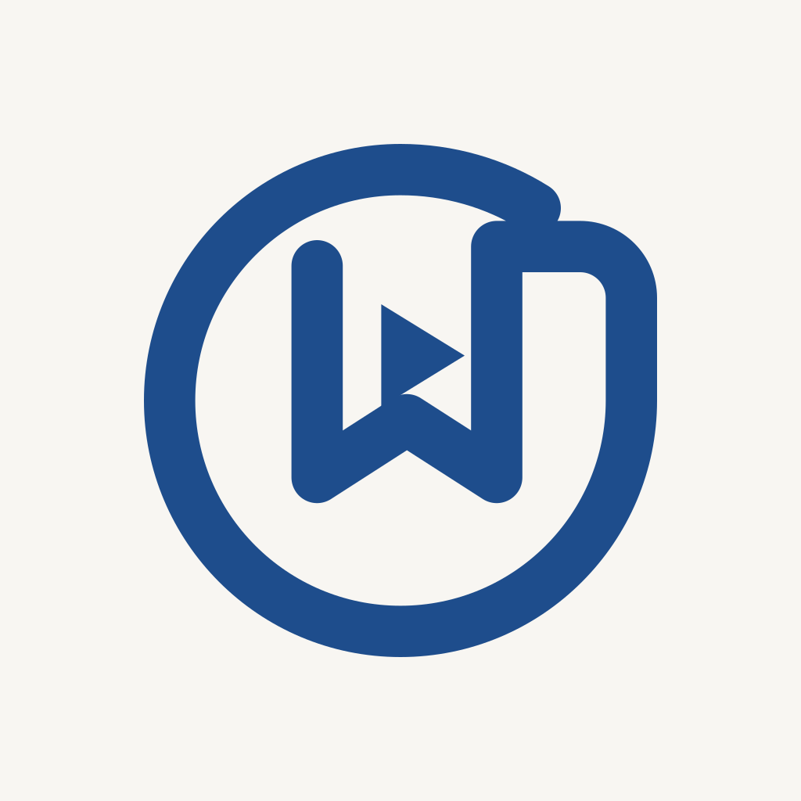
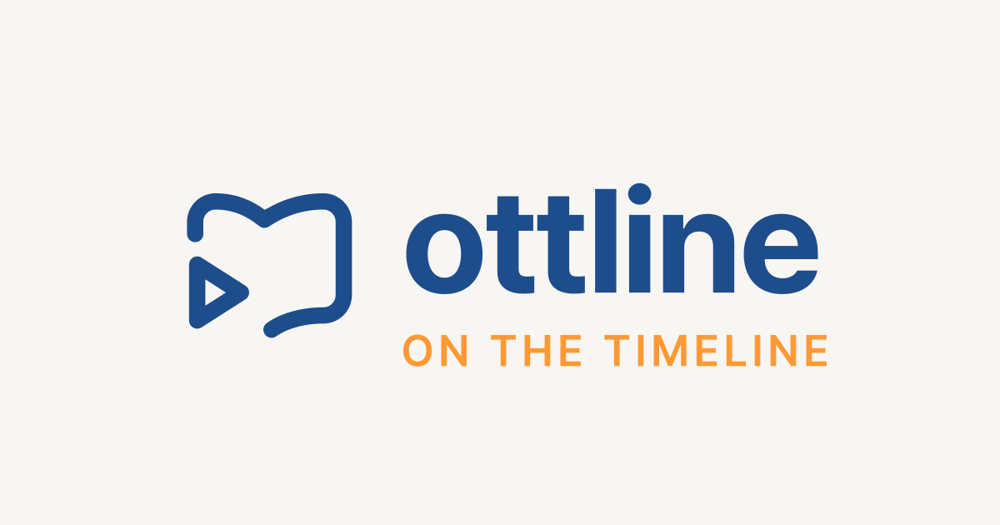

기존 CI
열린 책과 재생 모양의 조합이에요. 기존 바탕의 둥근 모서리와 파란 톤을 그대로 보여줘요.
현재 배포 자산 · 비교 기준
ottline · Identity v2
책과 영상을 기억하던 익숙한 심볼을, 따뜻한 타임라인에 맞춰 정리했어요. 작은 아이콘에서도 책과 재생 모양을 알아볼 수 있고, 이름 옆에서는 조용히 자리를 지켜요.
제품 화면과 분리된 CI 검토용 페이지예요. 앱 아이콘의 원본은 모서리를 미리 둥글게 만들지 않은 정사각형이며, 아래 모양은 시스템 마스크를 적용한 미리보기예요.
기존 심볼과 두 가지 방향을 함께 비교해요.
열린 책과 재생 모양의 조합이에요. 기존 바탕의 둥근 모서리와 파란 톤을 그대로 보여줘요.
심볼은 따뜻한 화면에 맞춰 정리하고, 이름은 익숙한 Pretendard 글자체와 자간을 그대로 사용해요.

시간의 궤적과 책갈피를 한 모양으로 묶었어요. A보다 다른 인상이지만, 작은 크기에서 겹친 선의 구분이 약해져요.
확대하지 않은 48·64px 앱 아이콘과 작은 파비콘이에요.
원형 시스템 마스크
Squircle 시스템 마스크
브라우저 탭 · 파비콘
파비콘은 같은 심볼을 조금 크게 배치해요. 앱 아이콘의 마스크용 여백과 별도로, 작은 브라우저 탭에서 윤곽이 잘 남게 맞췄어요.
기존 Pretendard 700과 자간을 실제 140·150·168px 크기로 확인해요.
밝은 헤더 · 140px
밝은 헤더 · 150px
밝은 헤더 · 168px
어두운 헤더 · 140px
어두운 헤더 · 150px
어두운 헤더 · 168px
A안의 원본과 플랫폼별 출력을 준비했어요.
앱 아이콘
1024·512·192·180·128·64·48·32·16px 불투명 정사각형 PNG를 만들었어요. 바탕은 크림색으로 끝까지 채우고 모서리는 시스템이 적용해요.
레이어
Android는 108×108 좌표의 전경·배경·단색 SVG와 432px PNG를 제공해요. Apple은 1024px 전경·배경 SVG와 PNG를 준비했어요. Icon Composer 구성과 실제 네이티브 앱 배포는 별도 작업이에요.

Android 전경의 가장 먼 픽셀은 중심에서 32.899dp로, 33dp 반경 안에 있어요. PWA 아이콘은 1024px 원본에서 405.663px 반경 안에 들어가, 너비 40%인 409.6px 안전 영역을 지켜요.
파일의 투명도, PNG 크기, 안전 영역은 생성 스크립트가 함께 검사해요. 실제 iOS·Android 기기의 시스템 효과와 최종 렌더링 검증은 네이티브 적용 단계에서 이어가요.